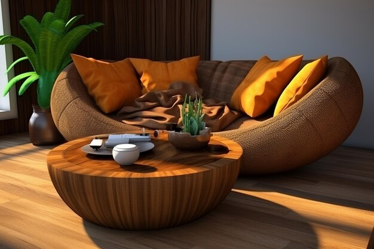
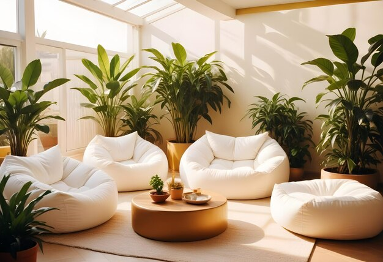
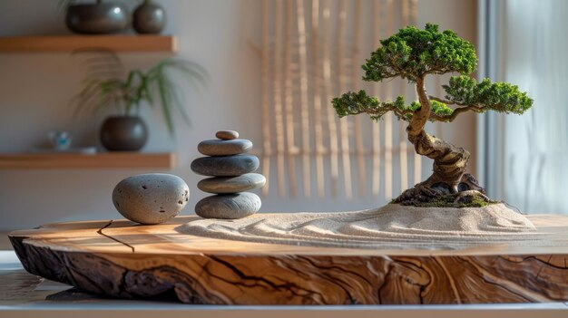
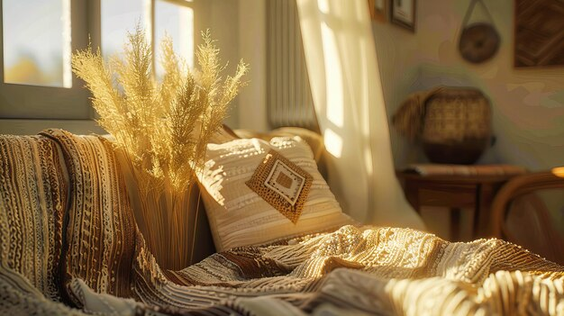
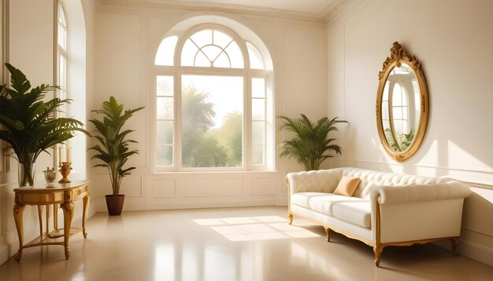
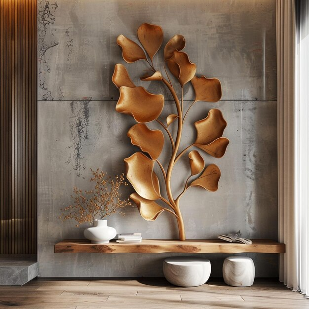
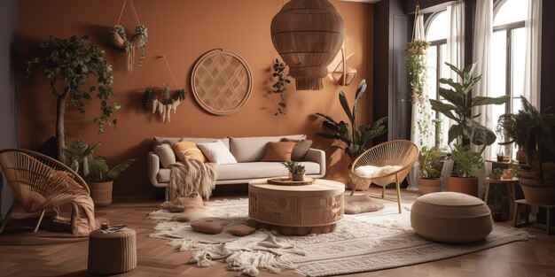
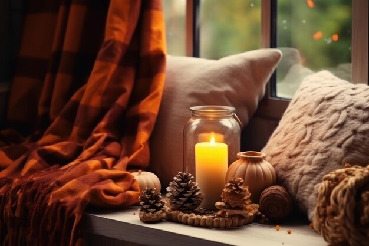
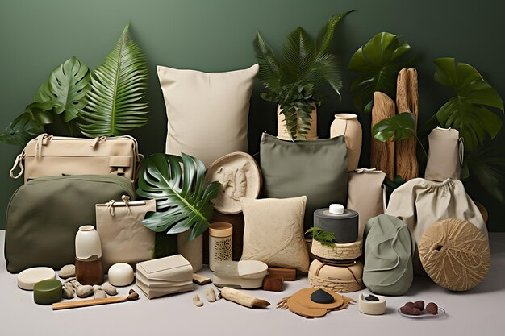

.jpg)
Incorporate Natural Elements for Warmth and Balance
Bringing nature indoors can make your home feel more serene and welcoming. Natural materials like wood, stone, and plants add warmth and texture, creating a balanced and grounded environment. Consider using wooden furniture or stone countertops, which provide a tactile contrast to softer materials like fabric. Plants are another excellent way to introduce nature; they not only purify the air but also add a fresh, organic vibe to your decor. Even small touches like woven baskets or ceramic vases can enhance the natural feel of a room.
- Wood Elements

- Furniture: Opt for wooden furniture pieces like coffee tables, bookshelves, and bed frames. Choose natural finishes or lightly stained woods.
- Accents: Use wooden picture frames, trays, or decorative bowls to add warmth.
- Plants

- Indoor Plants: Incorporate a variety of indoor plants such as ferns, succulents, or peace lilies. They not only bring life to a space but also improve air quality.
- Planters: Choose planters made of natural materials like terracotta, ceramic, or woven baskets.
- Stone and Minerals

- Decorative Stones: Use stones as part of your decor, such as in vases or as paperweights.
- Surface Materials: Consider granite or marble countertops for a touch of natural elegance.
- Natural Textiles

- Fabrics: Incorporate textiles like wool, cotton, linen, or jute in your cushions, rugs, and curtains.
- Bedding: Choose bedding made from natural fibers to enhance comfort and warmth.
- Water Features
.jpg)
- Fountains: A small indoor water fountain can add soothing sounds and a calming ambiance.
- Aquariums: A well-maintained aquarium can also introduce a dynamic natural element.
- Natural Light

- Windows: Maximize natural light by keeping windows unobstructed. Use light, airy curtains if needed.
- Mirrors: Place mirrors strategically to reflect light and create a sense of space.
- Organic Shapes and Patterns

- Decor: Choose decor items with organic shapes and patterns that mimic natural forms, such as leaf prints or floral motifs.
- Art: Consider art that features landscapes, natural scenes, or abstract forms inspired by nature.
- Color Palette

- Earthy Tones: Use colors inspired by nature, such as earthy browns, greens, and soft blues. These colors create a soothing and balanced atmosphere.
- Accent Colors: Incorporate brighter, nature-inspired accents like deep forest green or warm terracotta.
- Natural Scents

- Essential Oils: Use essential oil diffusers with natural scents like lavender, cedarwood, or eucalyptus.
- Candles: Opt for candles made from beeswax or soy wax with natural fragrances.
- Sustainable Choices

- Eco-friendly Products: Choose products and materials that are sustainably sourced or recycled.
- Local Materials: Whenever possible, use materials that are local to your area to reduce environmental impact and support local craftsmanship.